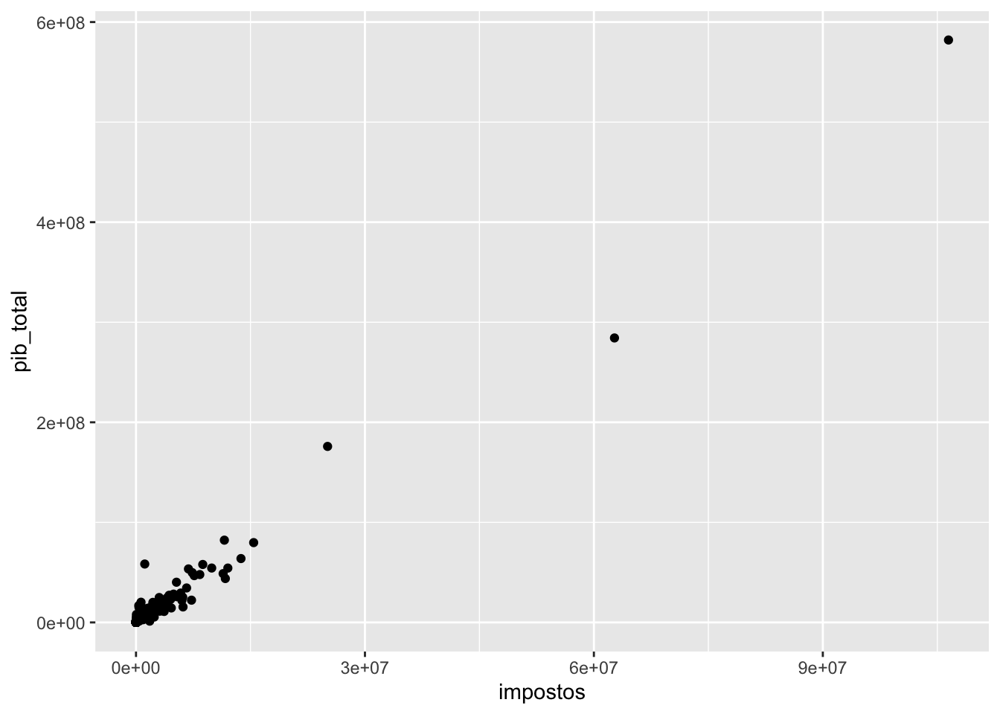
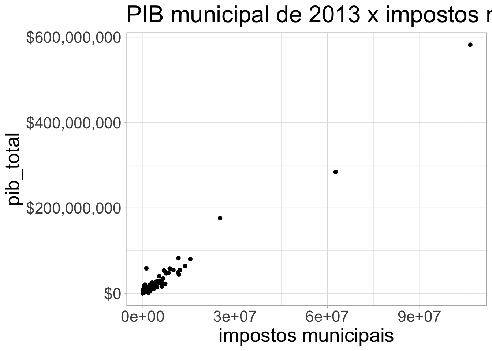
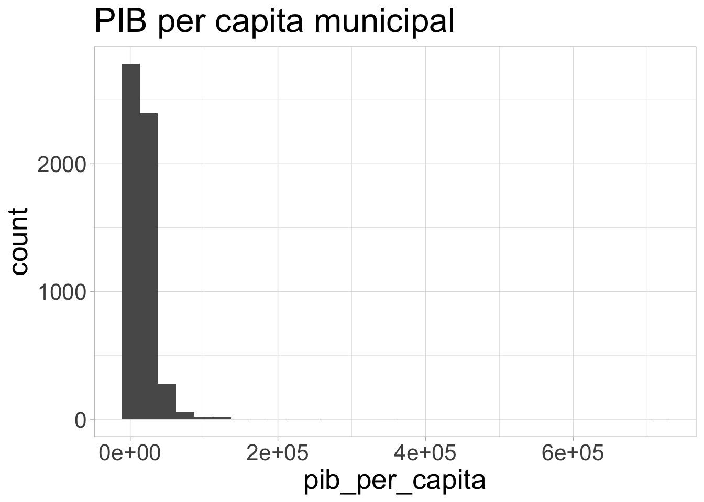

Capítulo 2 Introdução ao R e RStudio
2.1 R e RStudio
O R é uma linguagem de programação voltada para análise de dados. O RStudio é uma IDE (interface de desenvolvimento), que nos ajuda a programar em R. No curso utilizaremos o RStudio para facilitar programar em R.
Normalmente, iremos escrever um comando aqui no Script, clicar em executar (run) ou apertar ctrl + enter, e o RStudio vai copiar o comando, colar no console e executá-los para nós.
2.1.1 Instalação do R
Para instalar o R, acesse o site oficial do CRAN (Comprehensive R Archive Network) em https://cran.r-project.org/ e baixe a versão adequada para o seu sistema operacional (Windows, Mac ou Linux). Siga as instruções do instalador.
2.1.2 Instalação do RStudio
Após instalar o R, acesse https://posit.co/download/rstudio-desktop/ e baixe o RStudio Desktop (versão gratuita). O RStudio requer que o R já esteja instalado no computador.
2.1.3 A interface do RStudio
O RStudio possui quatro painéis principais:
- Editor de Script (canto superior esquerdo): onde escrevemos nossos códigos.
- Console (canto inferior esquerdo): onde os comandos são executados e os resultados aparecem.
- Ambiente/Histórico (canto superior direito): mostra os objetos criados na sessão.
- Arquivos/Plots/Pacotes/Help (canto inferior direito): navegação de arquivos, visualização de gráficos, gerenciamento de pacotes e ajuda.
2.3 Objetos no R
Tudo no R é um objeto. Isso significa que um número é um objeto.
## [1] 3.141593Isso significa que funções (comandos) também são objetos.
## [1] 6## function (..., na.rm = FALSE) .Primitive("sum")E nós podemos criar nossos próprios objetos, dando os nomes que quisermos. É possível sobrescrever objetos que já existem no R (como “sum”), mas não é recomendável, pois isso pode gerar erros difíceis de encontrar.
## [1] 102.4 Tipos de objetos
O R tem muitos tipos de objetos. Vamos listar aqui apenas os mais básicos.
2.5 Armazenando dados
Para armazenar dados, usualmente teremos 4 tipos de objetos: 1. vetor, 2. matriz, 3. data.frame, 4. lista. Não vou falar de lista agora (nem de array, que é uma generalização da matriz para mais de duas dimensões).
2.5.1 Vetor
Um vetor é uma sequência de objetos.
## [1] 1 2 3## [1] 1 2 3## [1] "Manoel" "Hugo" "Lia" "Juliana" "Jéssica"## [1] 1 2 3 2 3 1Os elementos de um vetor devem ser todos do mesmo tipo:
## [1] "1"2.5.2 Matriz
Uma matriz é uma coleção bidimensional de elementos do mesmo tipo. Todas as colunas só podem ser de um tipo, ou seja, não posso ter uma coluna numeric e outra de character, por exemplo.
| 1 | 4 |
| 2 | 5 |
| 3 | 6 |
2.5.3 Data Frame
O data.frame é uma tabela/planilha, e é onde normalmente armazenamos nossos bancos de dados no R.
| x | y |
|---|---|
| 1 | a |
| 2 | b |
| 3 | c |
2.5.3.1 Datas
## [1] "2020-10-23" "2020-10-24" "2020-10-25" "2020-10-26" "2020-10-27"
## [6] "2020-10-28" "2020-10-29" "2020-10-30" "2020-10-31" "2020-11-01"# criando data.frame com datas
acoes <- data.frame(
tempo = as.Date('2009-01-01') + 0:9,
X = rnorm(10, 0, 1),
Y = rnorm(10, 0, 2),
Z = rnorm(10, 0, 4)
)| tempo | X | Y | Z |
|---|---|---|---|
| 2009-01-01 | -1.0977060 | -2.0230730 | -6.8084677 |
| 2009-01-02 | 0.3086725 | -1.2241809 | 3.3715535 |
| 2009-01-03 | -0.4681898 | -1.7241641 | -2.7498706 |
| 2009-01-04 | -0.8746414 | -2.0519771 | -5.2375834 |
| 2009-01-05 | -0.5290172 | -2.6005439 | -0.5674097 |
| 2009-01-06 | 0.7422441 | -1.0803279 | -6.2531138 |
| 2009-01-07 | -0.2883652 | 0.0043235 | -0.5973346 |
| 2009-01-08 | 0.3788121 | 1.5803374 | -3.6148925 |
| 2009-01-09 | 0.1452928 | 0.2341064 | -2.5036038 |
| 2009-01-10 | -0.0732459 | -0.2042482 | -1.7407431 |
2.6 Bibliotecas/pacotes
O R permite que a gente importe comandos que não vêm por padrão no R. Em geral esses comandos estão agrupados sob um pacote. Para usar esses comandos, primeiro a gente instala o pacote, e depois carrega a biblioteca.
2.7 Importando dados
Para importar dados, existem diversas funções e pacotes no R. Vamos usar como exemplo um arquivo RDS (formato nativo do R) com dados de PIB municipal de 2013 do IBGE.
2.8 Data wrangling
Para manipulação, limpeza e processamento de dados, iremos utilizar o chamado “tidyverse”.
library(tidyverse)
# digamos que quero o pib total médio e o pib per capita médio
# basta usar o comando summarise, que resume os dados e escolher a função mean.
df <- pib_cid %>%
summarise(pib_medio = mean(pib_total),
pib_per_capita_medio = mean(pib_per_capita))
kable(df)| pib_medio | pib_per_capita_medio |
|---|---|
| 957202.7 | 17388.86 |
# se eu quiser a soma dos pibs municipais
df <- pib_cid %>%
summarise(soma_pib = sum(pib_total)) %>%
head()
kable(df)| soma_pib |
|---|
| 5331618957 |
# maior e menor pibs e pibs per capita entre municípios
df <- pib_cid %>%
summarise(pib_max = max(pib_total),
pib_min = min(pib_total),
pib_per_capita_max = max(pib_per_capita),
pib_per_capita_min = min(pib_per_capita)) %>%
head()
kable(df)| pib_max | pib_min | pib_per_capita_max | pib_per_capita_min |
|---|---|---|---|
| 582079726 | 4198.94 | 717343.7 | 301.6 |
# se eu quiser apenas dos municípios do estado de SP?
# basta filtrar pelo estado de SP, com o comando filter
df <- pib_cid %>%
filter(sigla_uf == "SP") %>%
summarise(soma_pib = sum(pib_total)) %>%
head()
kable(df)| soma_pib |
|---|
| 1715238417 |
df <- pib_cid %>%
filter(sigla_uf == "SP") %>%
summarise(pib_medio = mean(pib_total),
pib_per_capita_medio = mean(pib_per_capita)) %>%
head()
kable(df)| pib_medio | pib_per_capita_medio |
|---|---|
| 2659284 | 24827.14 |
# se eu quiser esse cálculo por uf (para cada uma das ufs?)
# Aí é melhor agrupar por uf
# ideia é: split by, apply (function), combine (summarise?)
df <- pib_cid %>%
group_by(sigla_uf) %>%
summarise(pib_medio = mean(pib_total),
pib_per_capita_medio = mean(pib_per_capita)) %>%
head()
kable(df)| sigla_uf | pib_medio | pib_per_capita_medio |
|---|---|---|
| AC | 521542.3 | 11450.979 |
| AL | 365515.0 | 7931.148 |
| AM | 1339536.0 | 8975.314 |
| AP | 797717.9 | 14947.829 |
| BA | 491233.3 | 8814.841 |
| CE | 592590.0 | 7157.360 |
# agora, quero criar uma nova variável, que é o pib estadual
df <- pib_cid %>%
group_by(sigla_uf) %>%
mutate(pib_uf = sum(pib_total))
df <- head(df)
kable(df)| ano | codigo_regiao | nome_regiao | codigo_uf | sigla_uf | nome_uf | cod_municipio | nome_munic | nome_metro | codigo_meso | nome_meso | codigo_micro | nome_micro | codigo_reg_geo_imediata | nome_reg_geo_imediata | mun_reg_geo_imediata | codigo_reg_geo_intermediaria | nome_reg_geo_intermediaria | mun_reg_geo_intermediaria | codigo_concentracao_urbana | nome_concentracao_urbana | tipo_concentracao_urbana | codigo_arranjo_populacional | nome_arranjo_populacional | hierarquia_urbana | hierarquia_urbana_principais | codigo_regiao_rural | nome_regiao_rural | regiao_rural_classificacao | amazonia_legal | semiarido | cidade_de_sao_paulo | vab_agropecuaria | vab_industria | vab_servicos_exclusivo | vab_adm_publica | vab_total | impostos | pib_total | pib_per_capita | atividade_vab1 | atividade_vab2 | atividade_vab3 | pib_uf |
|---|---|---|---|---|---|---|---|---|---|---|---|---|---|---|---|---|---|---|---|---|---|---|---|---|---|---|---|---|---|---|---|---|---|---|---|---|---|---|---|---|---|---|---|
| 2013 | 1 | Norte | 11 | RO | Rondônia | 1100015 | Alta Floresta D’Oeste | NA | 1102 | Leste Rondoniense | 11006 | Cacoal | 110005 | Cacoal | do Entorno | 1102 | Ji-Paraná | do Entorno | NA | NA | NA | NA | NA | Centro Local | Centro Local | 1101 | Região Rural da Capital Regional de Porto Velho | Região Rural de Capital Regional | Sim | Não | Não | 110850.84 | 20336.994 | 73025.07 | 120335.59 | 324548.50 | 16776.193 | 341324.69 | 13266.66 | Administração, defesa, educação e saúde públicas e seguridade social | Pecuária, inclusive apoio à pecuária | Demais serviços | 31121413 |
| 2013 | 1 | Norte | 11 | RO | Rondônia | 1100023 | Ariquemes | NA | 1102 | Leste Rondoniense | 11003 | Ariquemes | 110002 | Ariquemes | Polo | 1101 | Porto Velho | do Entorno | NA | NA | NA | NA | NA | Centro Sub-regional B | Centro Sub-regional | 1101 | Região Rural da Capital Regional de Porto Velho | Região Rural de Capital Regional | Sim | Não | Não | 93249.75 | 354733.212 | 694832.17 | 466732.80 | 1609547.93 | 190304.571 | 1799852.51 | 17772.99 | Administração, defesa, educação e saúde públicas e seguridade social | Demais serviços | Comércio e reparação de veículos automotores e motocicletas | 31121413 |
| 2013 | 1 | Norte | 11 | RO | Rondônia | 1100031 | Cabixi | NA | 1102 | Leste Rondoniense | 11008 | Colorado do Oeste | 110006 | Vilhena | do Entorno | 1102 | Ji-Paraná | do Entorno | NA | NA | NA | NA | NA | Centro Local | Centro Local | 1101 | Região Rural da Capital Regional de Porto Velho | Região Rural de Capital Regional | Sim | Não | Não | 38259.43 | 3412.205 | 17787.45 | 32838.64 | 92297.72 | 4066.819 | 96364.54 | 14836.73 | Administração, defesa, educação e saúde públicas e seguridade social | Pecuária, inclusive apoio à pecuária | Agricultura, inclusive apoio à agricultura e a pós colheita | 31121413 |
| 2013 | 1 | Norte | 11 | RO | Rondônia | 1100049 | Cacoal | NA | 1102 | Leste Rondoniense | 11006 | Cacoal | 110005 | Cacoal | Polo | 1102 | Ji-Paraná | do Entorno | NA | NA | NA | NA | NA | Centro Sub-regional B | Centro Sub-regional | 5105 | Região Rural do Centro Sub-regional de Vilhena (RO) e Cacoal (RO) | Região Rural de Centro Sub-regional | Sim | Não | Não | 140658.88 | 140288.317 | 599519.83 | 395842.23 | 1276309.26 | 156944.241 | 1433253.51 | 16692.33 | Administração, defesa, educação e saúde públicas e seguridade social | Demais serviços | Comércio e reparação de veículos automotores e motocicletas | 31121413 |
| 2013 | 1 | Norte | 11 | RO | Rondônia | 1100056 | Cerejeiras | NA | 1102 | Leste Rondoniense | 11008 | Colorado do Oeste | 110006 | Vilhena | do Entorno | 1102 | Ji-Paraná | do Entorno | NA | NA | NA | NA | NA | Centro de Zona B | Centro de Zona | 1101 | Região Rural da Capital Regional de Porto Velho | Região Rural de Capital Regional | Sim | Não | Não | 45153.64 | 19889.818 | 149569.44 | 83089.55 | 297702.45 | 55567.232 | 353269.68 | 19581.49 | Administração, defesa, educação e saúde públicas e seguridade social | Comércio e reparação de veículos automotores e motocicletas | Demais serviços | 31121413 |
| 2013 | 1 | Norte | 11 | RO | Rondônia | 1100064 | Colorado do Oeste | NA | 1102 | Leste Rondoniense | 11008 | Colorado do Oeste | 110006 | Vilhena | do Entorno | 1102 | Ji-Paraná | do Entorno | NA | NA | NA | NA | NA | Centro Local | Centro Local | 1101 | Região Rural da Capital Regional de Porto Velho | Região Rural de Capital Regional | Sim | Não | Não | 51029.59 | 23179.131 | 66099.41 | 86090.50 | 226398.63 | 16368.611 | 242767.24 | 12650.72 | Administração, defesa, educação e saúde públicas e seguridade social | Demais serviços | Pecuária, inclusive apoio à pecuária | 31121413 |
Coisas estranhas. O maior pib per capita municipal deu muito alto. Vamos ver qual município é? Vamos filtrar e depois selecionar apenas algumas colunas.
df <- pib_cid %>%
filter(pib_per_capita > 700000) %>%
dplyr::select(sigla_uf, nome_munic, pib_per_capita, pib_total) %>%
head()
kable(df)| sigla_uf | nome_munic | pib_per_capita | pib_total |
|---|---|---|---|
| ES | Presidente Kennedy | 717343.7 | 7984035 |
2.9 Visualização
Para visualizarmos os dados com gráficos, utilizaremos a biblioteca ggplot2.

A lógica geral de um gráfico com ggplot2 é como no exemplo acima. Primeiro passamos as variáveis por meio do comando ggplot, dentro de aes (de aesthetics), depois combinamos com o tipo de plot que queremos fazer, nesse caso, pontos, com geom_point. É possível customizar o gráfico para ele ficar mais bonito. Vamos fazer isso agora.
pib_cid %>%
ggplot(aes(y=pib_total, x=impostos)) + geom_point() +
scale_y_continuous(labels = scales::dollar) + theme_light() +
theme(text=element_text(size=20)) +
xlab("impostos municipais") + ggtitle("PIB municipal de 2013 x impostos municipais")
Para fazer outro tipo de gráfico, é só variar o geom. Por exemplo, um histograma do PIB per capita.
pib_cid %>%
ggplot(aes(x=pib_per_capita)) + geom_histogram() +
theme_light() + theme(text=element_text(size=20)) +
ggtitle("PIB per capita municipal")
2.10 Exercícios
2.10.1 Importação de dados
(Fácil) Importe o arquivo
dados/municipios_virgula.csvusandoread.csv(). Quantos municípios há no banco? Quais são as colunas?(Fácil) Tente importar o arquivo
dados/municipios_pontovirgula.csvusandoread.csv()(sem argumentos adicionais). O que acontece? Por que dá erro? Agora importe corretamente usandoread.csv2()com o argumentofileEncoding = "latin1". Explique a diferença entreread.csv()eread.csv2().(Médio) Importe o arquivo
dados/eleicoes_2022.csv. Verifique se o município “Pau D’Arco” foi importado corretamente. Dica: usefilter()para buscar o município e verifique se o nome aparece completo.(Médio) Importe o arquivo
dados/idh_municipios.csv. Este arquivo usa ponto e vírgula como separador e está codificado em latin1. Importe-o corretamente e verifique se as colunas numéricas (comoidh_2010) são de fato numéricas (usestr()ouclass()).(Difícil) Tente importar o arquivo
dados/idh_municipios.csvde três formas diferentes: (a)read.csv()sem argumentos extras; (b)read.csv2()semfileEncoding; (c)read.csv2()comfileEncoding = "latin1". Para cada tentativa, verifique: a importação funciona sem erro? Os nomes dos municípios com acento aparecem corretamente? As colunas numéricas são numéricas? Explique o que deu errado em cada caso.
2.10.2 Data wrangling com dplyr
(Fácil) Usando o banco
municipios_virgula.csv, encontre o município com o maior IDH e o município com o menor IDH.(Fácil) Usando o banco
municipios_virgula.csv, calcule a população total (soma) e a população média dos municípios.(Médio) Usando o banco
eleicoes_2022.csv, calcule o total de votos de cada candidato considerando todos os municípios. Ordene o resultado do mais votado para o menos votado (dica:arrange(desc(...))).(Médio) Usando o banco
idh_municipios.csv(importado corretamente), calcule o IDH médio por região do Brasil. Qual região tem o maior IDH médio? E o menor?(Médio) Usando o banco
eleicoes_2022.csv, crie uma nova coluna chamadavencedorque indica, para cada município, o candidato com o maior percentual de votos. Dica: agrupe por município, filtre a linha com o maior percentual (slice_max()), e selecione as colunas relevantes.(Difícil) Usando o banco
idh_municipios.csv, crie uma nova variável chamadacategoria_idhque classifica os municípios em: “Muito Alto” (IDH >= 0.8), “Alto” (0.7 <= IDH < 0.8), “Médio” (0.55 <= IDH < 0.7) e “Baixo” (IDH < 0.55). Usemutate()comcase_when(). Quantos municípios há em cada categoria?(Difícil) Usando o banco
idh_municipios.csv, calcule, para cada região, qual é a dimensão do IDH (educação, longevidade ou renda) que tem a maior média e qual tem a menor média. Dica: usegroup_by(),summarise()e depoispivot_longer()para facilitar a comparação.
2.10.3 Visualização com ggplot2
(Fácil) Usando o banco
municipios_virgula.csv, faça um gráfico de barras (geom_col()) mostrando a população de cada município. Ordene as barras da maior para a menor população (dica: usereorder()).(Médio) Usando o banco
idh_municipios.csv, faça um gráfico de dispersão (geom_point()) com o IDH de educação no eixo x e o IDH de renda no eixo y. Pinte os pontos por região (color = regiao). Adicione rótulos nos eixos e um título informativo.(Difícil) Usando o banco
eleicoes_2022.csv, faça um gráfico de barras empilhadas (geom_col()) que mostre, para cada município, a proporção de votos de cada candidato. Usey = votosefill = candidatopara empilhar as barras, eposition = "fill"para normalizar em proporções. Adicionecoord_flip()para facilitar a leitura dos nomes dos municípios.